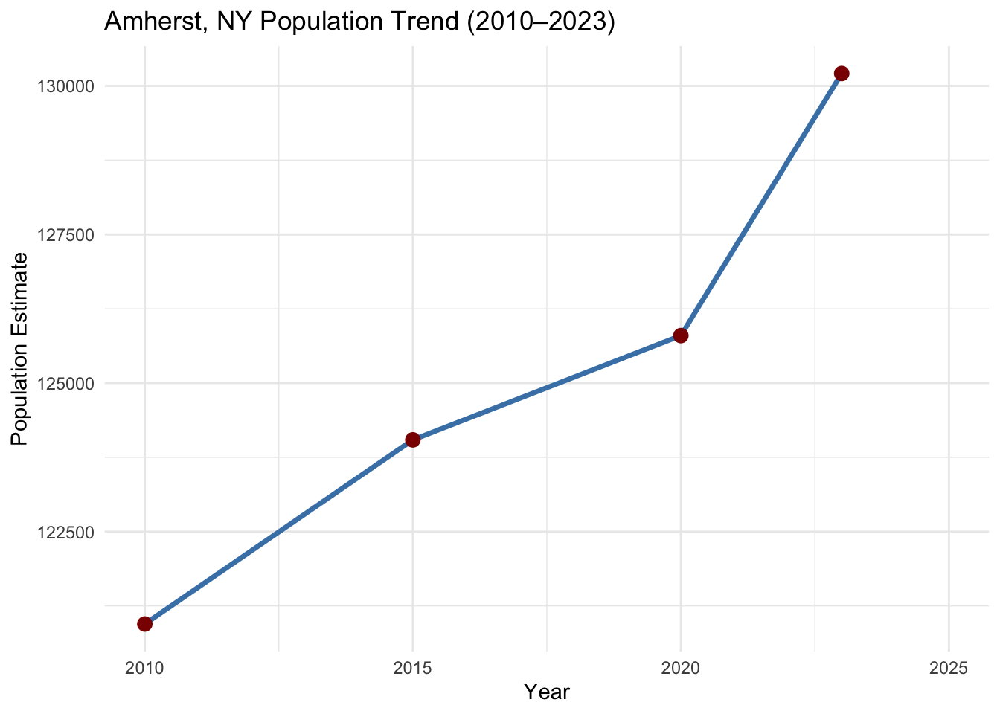
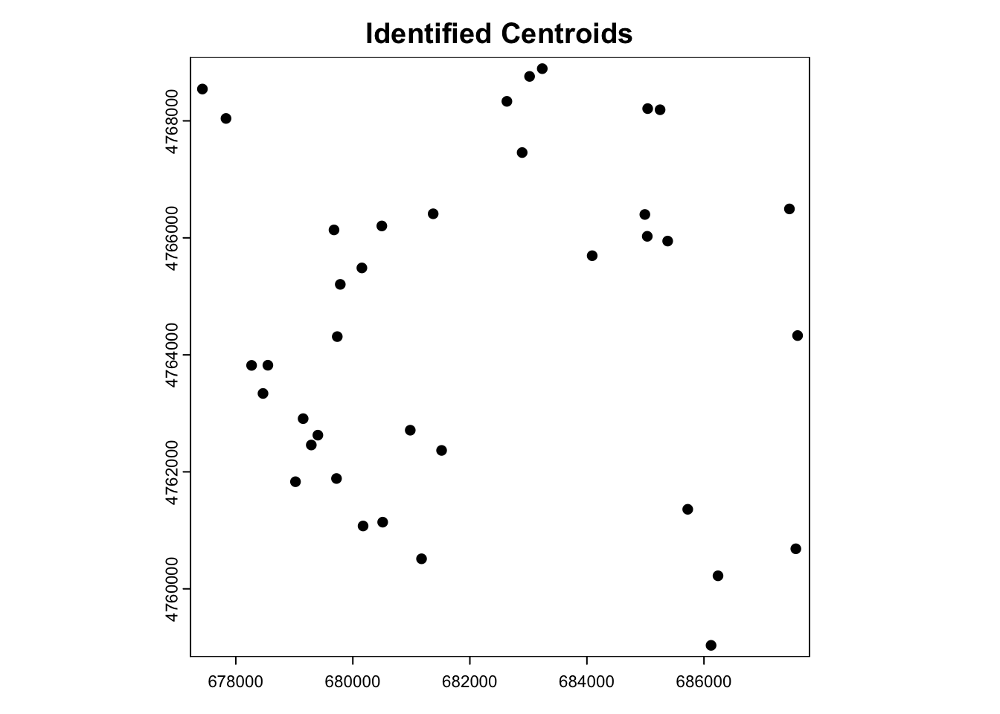

This project examined the land cover and land use (LCLU) changes between 2010 – 2024 in Amherst, New York. Additionally, since Amherst hosts multiple academic campuses– such as the University at Buffalo’s (UB) North Campus, the study looked at any evidence of physical changes resulting from studentification. The study found that there was an increase in residential land use supporting the overall Town’s population growth. The study also identified the majority of apartment land use change occurring within a two-mile radius of the university campus, which supports the University’s increase student population along with the physical land use changes corresponding with the studentification process
Introduction
Urban growth, enhanced by increasing populations, has been a primary factor in vegetation to urban surface land cover change (Ducey et al., 2018; Nyiranshimiyimanan & Mupenzi, 2020). In towns that host academic institutions, commonly referred to as “college towns”, overall town population varies based on the academic calendar, resulting in major seasonal increase and decrease population shifts (Sage et al., 2012). College towns often face studentification, a process where the growing student population significantly affects town characteristics. The studentification process affects a range of social, cultural, economic, and physical transformations (Mohammed & Ukai, 2022; Smith, 2004). While an increase in student population does create some economic benefits, it often creates challenges for long-term residents (Jolivet et al., 2023; Mosey, 2017). An increase in student population often attracts private businesses, such as chain retailers and real estate developers, which increases urban cover and land use tailored towards students. This shift in businesses and land use can displace locally owned businesses and alter neighborhood characteristics (Savage, 2025; Zasina, 2021). The construction of student-oriented facilities also increases property values near the campus(s), making real estate unaffordable for non-student residents and increasing local residential feelings of exclusion from these areas (Baron & Diamant, 2016; Mosey, 2017; Rogaly & Taylor, 2015; Savage, 2025). Physically, increase student populations often lead to more off-campus student housing– resulting in greater noise and traffic during the academic year, while academic breaks can leave parts of the town feeling like “ghost towns” (Kinton et al., 2018; Sage et al., 2012). Despite these challenges, an increase in student population can bring benefits such as higher consumerism and a workforce, allowing students to contribute positively to the local economy during academic periods (Zasina, 2021). This project was conducted to examine land cover and land use changes between 2010 – 2024, in Amherst, New York, a college town. The study aims to assess whether these changes reflect the Town and the university’s, residing inside the boundary, population dynamics and if there is any evidence of studentification based on the land use changes.
Study Area
The project focused on the Town of Amherst (Amherst), located in Erie County, New York. With parts of SUNY University at Buffalo (UB) and Erie Community College residing within the Town’s boundary, Amherst is considered a college town (Town of Amherst, 2025). This project focuses on land cover and land use change across Amherst, and specifically near the UB’s North Campus area. According to the US Census, the Town of Amherst experienced a 6.84% increase in its total population from 2010 – 2023. The population grew from 120,945 in 2010 to 129,209 in 2023, resulting in an increase of 8,264 residents (U.S. Census Bureau, 2023).
Code
library(tidycensus)library(tidyverse)library (ggplot2)library(knitr)library(kableExtra)#2010 Total Populationamherst_pop_2010 <-get_acs(geography ="county subdivision",variables =c("B01003_001"), # Total populationstate ="NY",year =2010,survey ="acs5",cache_table =TRUE)amherst_pop_2010 <- amherst_pop_2010 %>%filter(str_detect(NAME, "Amherst town, Erie County, New York"))#amherst_pop_2010#2015 Total Populationamherst_pop_2015 <-get_acs(geography ="county subdivision",variables =c("B01003_001"), # Total populationstate ="NY",year =2015,survey ="acs5",cache_table =TRUE)amherst_pop_2015 <- amherst_pop_2015%>%filter(str_detect(NAME, "Amherst town, Erie County, New York"))#amherst_pop_2015#2020 Total Populationamherst_pop_2020 <-get_acs(geography ="county subdivision",variables =c("B01003_001"), # Total populationstate ="NY",year =2020,survey ="acs5",cache_table =TRUE)amherst_pop_2020 <- amherst_pop_2020%>%filter(str_detect(NAME, "Amherst town, Erie County, New York"))#amherst_pop_2015#2023 Total Populationamherst_pop_2023 <-get_acs(geography ="county subdivision",variables =c("B01003_001"), # Total populationstate ="NY",year =2023,survey ="acs5",cache_table =TRUE)amherst_pop_2023 <- amherst_pop_2023%>%filter(str_detect(NAME, "Amherst town, Erie County, New York"))#amherst_pop_2023amherst_trend <-tibble (year =c(2010, 2015, 2020, 2023),population =c( amherst_pop_2010$estimate, amherst_pop_2015$estimate, amherst_pop_2020$estimate, amherst_pop_2023$estimate ))ggplot(amherst_trend, aes(x = year, y = population)) +geom_line(color ="steelblue", size =1.2) +geom_point(size =3, color ="darkred") +scale_x_continuous(breaks =seq(2010, 2025, by =5), # Tick marks every 5 yearslimits =c(2010, 2025) # Optional: constrain x-axis ) +labs(title ="Amherst, NY Population Trend (2010–2023)",x ="Year",y ="Population Estimate" ) +theme_minimal()

Code
kable(amherst_trend, col.names =c('Year', 'Total Population'), align ='c', caption ="Town of Amherst Total Population from 2010 - 2023") %>%row_spec(row =0, color ='white', background ='dodgerblue', font_size =20) %>%footnote(symbol ='Data gathered from US Census for respective years') %>%kable_styling(bootstrap_options ='striped')
Town of Amherst Total Population from 2010 - 2023
Year
Total Population
2010
120945
2015
124044
2020
125799
2023
130209
* Data gathered from US Census for respective years
From the University at Buffalo enrollment data, UB’s student enrollment rose by 2.9% from 2010 to 2015, followed by an 8.5% increase from 2015 – 2020. However, between 2020 – 2024, total enrollment declined by 1.4% (University at Buffalo, 2023)
Landsat-5TM, Landsat-8 OLI, and Landsat-9 OLI-2 Surface Reflectance products (30 m²; Path 17, Row 30) were used for this project. Sentinel-2 OLI products (10 m²) were incorporated as the ground truth dataset for calculating Landsat land cover accuracy. Landsat products were sourced from USGS EarthExplorer and Sentinel products were sourced from the Copernicus Browser. All remote sensing products were acquired between August 1 to September 21 with the least visible cloud cover within the study site. Landsat products, used for classifications, were created in 2010, 2015, 2017, 2020, and 2024 while Sentinel products, used as ground truth samples, were created in 2017, 2020, and 2024. For the classification process, the blue (450-515 nm), green (525-605 nm), red (630-690 nm), and near-infrared (750-900 nm) bands were utilized (Landsat-5: B1, B2, B3, B4) (Landsat-8 and -9, and Sentinel-2: B2, B3, B4, B5).
Remote Sensing Imagery Preprocessing
Before the classification process begun, all remotely sensed images were reprojected to a common coordinate system: Universal Transverse Mercator (UTM) WGS 8436 using ArcGIS Pro. All remote sensing raster images were clipped to the Town of Amherst boundary. Areas where agricultural land use changed from bare soil to vegetation cover, due to harvesting, significantly affected multiple accuracy metrics. To address this issue, the images were further clipped to a bounding box of (easting 676515 – 687885, northing 4757295 – 4769175).
Image Classification
All images were classified using a supervised classification method in ArcGIS Pro. All Landsat and Sentinel images were initially classified into four land cover categories: Water, Building, Road, and Vegetation. Due to the large spatial resolution of Landsat products, the building and road classes were later merged into a single urban surface class to conduct a change analysis. Training samples were placed throughout the entire study area– with a minimum of 2,000 Landsat training pixels and 50,000 Sentinel training pixels. Due to the absence of accuracy assessments, higher quantities of training pixels were required for the 2010 and 2015 Landsat images with 9,776 and 5,686 total pixels, respectively. The 2017, 2020, and 2024 Landsat images were classified based on how well their results were during their accuracy assessments with the classified Sentinel images. After analyzing areas with inconsistent classifications, pixels classified as building or road were merged into one single urban surface class, to help the accuracy metrics using RStudio.
Training Polygons Utilizing ArcGIS Pro
Training Sample Pixels For Each Raster Image
Initial pixel classifications was water (0), buildings (1), roads (2), vegetation (3)
Accuracy Assessments
Accuracy assessments were performed with ArcGIS Pro on the classified 2017, 2020, and 2024 Landsat images, with the classified Sentinel 2017, 2020, and 2024 images used as the referenced ground truths. Four-class confusion matrices were created using randomly selected pixels within the study site. Each class had relatively similar randomly selected pixel counts within each year assessed. In 2017, 2020, and 2024, each class had between 400 – 450, 830 – 960, and 750 – 965 pixels, respectively. User Accuracy (UA), Producer Accuracy (PA), Overall Accuracy (OA), and Kappa Score were all derived from the resulting confusion matrices. After assessing the accuracy measurements, the building and road classes were combined into a single urban surface class, to address challenges arising from the 30m2 Landsat spatial resolution such as the poor edge detection in residential neighborhoods. The four-class confusion matrices were then updated to three-class confusion matrices and corresponding accuracies metrics were updated accordingly.
Initial four-class accuracy assessments
Land Cover Change Analysis
Land cover change analysis was performed in RStudio. Each classified Landsat image was reclassified with numerical values: 0 for Water, 1 for Urban Surface, and 3 for Vegetation. Change detection was carried out in three, roughly five-year, intervals: 2010 - 2015, 2015 - 2020, and 2020 - 2024. For each interval, changes in land cover were assessed by comparing the pixel values at corresponding locations between the two images to determine whether the two associated pixel classes changed or remained the same. The 2017 Landsat image was excluded from the analysis due to differences in its classification method and accuracy.
Three-class accuracy assessments
Land Use Change Analysis
Land use change analysis was conducted using 2010 and 2024 Landsat images and focused on the 2010 image pixels classified as vegetation and later reclassified in the 2024 image as urban surface. A local analysis was performed using a focal 5×5 pixel moving window to identify hotspots of vegetation-to-urban surface change. Hotspots were defined as areas where at least 15 out of the 25 neighboring pixels within the window indicated vegetation-to urban surface change. After each hotspot was identified, the land use was manually assigned using Google Maps. Land use analysis was carried out for the entire study area. To investigate any correlation between land use change and University at Buffalo’s student population dynamics, a two-mile buffer was placed around UB’s North Campus. Land use hotspots, within this two-mile buffer, were later compared to the overall land use classification and the land use located outside the buffer.
Plot to show areas that changed from vegetation to developed urban between different years
Code
par(mfrow =c(1, 3), oma =c(0, 0, 4, 0)) veg_to_dev_10_15 <- (r10_aligned %in%c(0,3)) & (r15_aligned %in%c(1,2))plot(veg_to_dev_10_15, main ="2010 - 2015")veg_to_dev_15_17 <- (r15_aligned %in%c(0,3)) & (r17_aligned %in%c(1,2))plot(veg_to_dev_15_17, main ="2015 - 2017")veg_to_dev_17_20 <- (r17_aligned %in%c(0,3)) & (r20_aligned %in%c(1,2))plot(veg_to_dev_17_20, main ="2017 - 2020")mtext("Areas of Vegetation to Developed",outer =TRUE, cex =1.5, line =2)
The change analysis will use 2010-2024
Code
par(mfrow =c(1, 1), oma =c(0, 0, 4, 0)) veg_to_dev_10_24 <- (r10_aligned %in%c(0,3)) & (r24_aligned %in%c(1,2))plot(veg_to_dev_10_24, main ="2010 - 2024")veg_to_dev_17_24 <- (r17_aligned %in%c(0,3)) & (r24_aligned %in%c(1,2))#plot(veg_to_dev_17_24, main = "2017 - 2024")veg_to_dev_20_24 <- (r20_aligned %in%c(0,3)) & (r24_aligned %in%c(1,2))#plot(veg_to_dev_20_24, main = "2020 - 2024")mtext("Areas of Vegetation to Developed",outer =TRUE, cex =1.5, line =2)
Find spatial clustering of land change (‘True’ cells)
Code
moving_window <-matrix(1, 5, 5)
Code
veg_loss_hotspots_10_24 <-focal(veg_to_dev_10_24, w = moving_window, fun = sum, na.policy ="omit")plot(veg_loss_hotspots_10_24, main ="Vegetation to Development Hotspots 2010 - 2024", col =terrain.colors(170))
Code
strong_hotspots_10_24<- veg_loss_hotspots_10_24 >15plot(strong_hotspots_10_24, main ="Strong Vegetation Loss Hotspots 2010 - 2024", col =c("white", "red"))
Code
n_hotspot_pixels_10_24 <-global(strong_hotspots_10_24, sum, na.rm =TRUE)hotspot_area_m2_10_24 <- n_hotspot_pixels_10_24 *900cat(sprintf("There is a total of %.2f m² of hotspots identified.\n", hotspot_area_m2_10_24))
There is a total of 953100.00 m² of hotspots identified.
After identifying the hotspot areas, convert the raster pixels into polygons and calculate the centroid of each polygon. Afterwards, determine the land use type for each centroid using OpenStreetMap data.
Code
#convert raster hotspots to polygonshotspot_polygons <-as.polygons(strong_hotspots_10_24, dissolve =FALSE)hotspot_polygons <- hotspot_polygons[hotspot_polygons[[1]] ==1, ]#find centroids and coords to polygonscentroids <-centroids(hotspot_polygons)coords <-crds(centroids)#find clustering of centroids eps_value <-50# adjust as neededclust <-dbscan(coords, eps = eps_value, minPts =1)centroids$cluster <- clust$clusterattr_df <-as.data.frame(centroids)#make grouped centroids into one single centroid by average (x,y)centroids_df <-cbind(attr_df, x = coords[,1], y = coords[,2])cluster_summary <- centroids_df %>%group_by(cluster) %>%summarize(mean_x =mean(x),mean_y =mean(y),count =n() )cluster_centroids <-vect(cluster_summary[, c("mean_x", "mean_y")], geom =c("mean_x", "mean_y"), crs =crs(centroids))#areas of hotspotsplot(cluster_centroids, main ='Identified Centroids')

Code
clustered_centroids_sf <-st_as_sf(cluster_centroids)clustered_centroids_wgs84 <-st_transform(clustered_centroids_sf, 4326)buffer_radius <-0.00025# ~25 meters in lat/lon degreescentroid_buffers <-st_buffer(clustered_centroids_wgs84, dist = buffer_radius)global_bbox <-st_bbox(centroid_buffers)osm_key <-"landuse"query <-opq(bbox = global_bbox) %>%add_osm_feature(key = osm_key)osm_data <-tryCatch(osmdata_sf(query),error =function(e) NULL)if (!is.null(osm_data) &&nrow(osm_data$osm_polygons) >0) { osm_landuse <- osm_data$osm_polygons overlaps <-st_join(centroid_buffers, osm_landuse, join = st_intersects, left =FALSE)if (nrow(overlaps) >0) {cat("Matched landuse types:\n")print(table(overlaps$landuse))plot(st_geometry(centroid_buffers), col =NA, border ="gray", main ="Land Use Around Clustered Centroids")plot(st_geometry(osm_landuse), col ="lightgreen", border ="green", add =TRUE)plot(st_geometry(clustered_centroids_wgs84), col ="black", pch =19, add =TRUE) } else {cat("no landuse polygons overlapped with point buffer.") }} else {cat("no landuse data returned from OSM.")}
#buffer the centroids to find the various land use around the areacentroid_buffers$id <-seq_len(nrow(centroid_buffers))landuse_matches <-st_join(centroid_buffers, osm_landuse, join = st_intersects, left =FALSE)#find the most dominant land use and assign to the centroiddominant_landuse <- landuse_matches %>%st_drop_geometry() %>%group_by(id, landuse) %>%summarize(count =n(), .groups ="drop") %>%group_by(id) %>%slice_max(order_by = count, n =1, with_ties =FALSE)centroid_with_landuse <-left_join(centroid_buffers, dominant_landuse, by ="id")centroid_points <-st_centroid(centroid_with_landuse)centroid_points <- centroid_points %>%mutate(landuse =ifelse(is.na(landuse), "not found", landuse),count =1)ggplot() +annotation_map_tile(type ="osm") +geom_sf(data = centroid_points, aes(color = landuse), size =3, shape =19) +scale_color_viridis_d(option ="plasma", name ="Dominant Landuse") +theme_minimal() +labs(title ="Centroids Colored by Dominant Landuse" ) +theme(legend.position ="right")
Identifying land use change using OSM data creates a large amount of uncertainty due to the data manipulation required to convert 10m raster cells into polygons and points. Therefore, it was decided for this project to use physical analysis to determine land use within the hotspot regions. The original hotspot cells were overlaid onto a Leaflet map to create a visual identification of land use for these hotpot areas.
Code
#2010 - 2024 Hotspot strong_hotspots_proj_10_24 <-project(strong_hotspots_10_24, "EPSG:3857")#Convert True/False to (1/0)strong_hotspots_proj_10_24_numeric <-as.numeric(strong_hotspots_proj_10_24)strong_hotspots_proj_10_24_numeric_no_zeros <-mask(strong_hotspots_proj_10_24_numeric, strong_hotspots_proj_10_24_numeric, maskvalues =c(0, NA))pal_hotspots <-colorNumeric(palette =c("transparent", "red"),domain =c(0, 1))#Leafet map with osm to identify land use of hotspot areasleaflet() %>%addProviderTiles(providers$OpenStreetMap) %>%addRasterImage( strong_hotspots_proj_10_24_numeric_no_zeros,colors = pal_hotspots,opacity =0.50, # Show hotspots with full opacityproject =FALSE ) %>%addLegend(position ="bottomright",pal = pal_hotspots,values =c(0, 1),title ="Vegetation Loss Hotspots (2010-2024)",labels =c("No Hotspot", "Hotspot") )
hotspots_utm <-st_transform(hotspots, crs =st_crs(buffer_2mile))hotspots_within_buffer <-st_intersection(hotspots_utm, buffer_2mile)df2 <-as.data.frame(hotspots_within_buffer)df2 <- df2 %>%group_by(Name) %>%summarize(Count =n())kable(df2, caption ="2024 Hotspot Land Use in 2 Mile Buffer of University at Buffalo")%>%kable_styling(bootstrap_options ='striped')
2024 Hotspot Land Use in 2 Mile Buffer of University at Buffalo
Name
Count
Apartments
7
Commercial
1
False
2
Hospital
1
In Progress
1
Misc.
1
Parking Lot
2
Residential
1
Results
Land Use Change in Amherst, New York
Land use analysis, conducted between the 2010 and 2024 Landsat images, identified 29 hotspots, within the entire study region, where the vegetation class transformed into the urban surface class. Of these 29 hotspots, two hotspots were determined to be false classifications, which was likely due to the 15-pixel threshold used to define a hotspot. Among the 27 true vegetation-to-urban surface hotspots, the main land use types were classified as residential and apartments.
The increase in residential and apartment developments aligns with population growth in Amherst between 2010 and 2023. The observed increase in housing land use positively correlates with Amherst’s increasing population.
Land Use Change Near University at Buffalo’s North Campus
A proximity analysis was conducted after applying a two-mile buffer around the University at Buffalo’s North Campus. Of the 27 vegetation-to-urban surface hotspots identified within the study area, 14 hotspots were located within the two-mile buffer zone. Most of these hotspots, inside the buffer, were classified as apartments (7 out of 8 total apartment hotspots), suggesting that the apartment developments, within the buffer, are likely oriented towards university students. In contrast, the majority of residential hotspots (10 out of 11) were located outside the buffer, suggesting that these areas are oriented towards local residents. The addition of the seven student-oriented apartments, near the campus, reflects the physical changes associated with studentification (Smith, 2004). As more developments are catered towards the seasonal student population, it is likely that these areas experience fluctuations in activity- becoming quieter and empty during academic breaks and busier with increased traffic and noise during the academic season. Additionally, University at Buffalo’s enrollment data, from 2010 – 2024, showed an increase in student enrollments between 2010 – 2020, which may have contributed to the rise in apartment buildings. However, the enrollment decline from 2020 – 2024, could further enhance the sense of emptiness in these student-focused areas during academic breaks (Kinton et al., 2018; Sage et al., 2012).
Conclusion
A total of 27 vegetation-to-urban surface hotspots were identified over the study period. The major hotspots were identified as residential neighborhoods and apartment buildings. Residential hotspots were primarily located outside the two-mile radius from the University at Buffalo’s North Campus– suggesting they are oriented toward local residents and reflect the overall growing town population indicated by US Census data. In contrast, majority of apartment hotspots were concentrated within the two-mile buffer zone around the academic campus– likely serving the student population. The increase in off-campus student housing supports signs of studentification, specifically the physical land change aspect. Based on other studentification studies, these student-oriented neighborhoods may experience seasonal fluctuations; neighborhoods appear quieter during academic breaks and significantly busier, with increased traffic and noise, during the academic year.
References
Baron, M. G., & Diamant, E. R. (2016). Real estate in studentified neighborhoods. ERSA Conference Papers, ersa16p642.
Ducey, M. J., Johnson, K. M., Belair, E. P., & Cook, B. D. (2018). The influence of human demography on land cover change in the Great Lakes States, USA. Environmental Management, 62, 1089–1107.
Jolivet, V., Reiser, C., Baumann, Y., & Gonzalès, R. (2023). Before displacement: Studentification, campus-led gentrification and rental market transformation in a multiethnic neighborhood (Parc-Extension, Montréal). Urban Geography, 44(5), 983–1002.
Kinton, C., Smith, D. P., Harrison, J., & Culora, A. (2018). New frontiers of studentification: The commodification of student housing as a driver of urban change. The Geographical Journal, 184(3), 242–254.
Mohammed, A. M., & Ukai, T. (2022). University campuses as agents for urban change. Environmental & Socio-Economic Studies, 10(1), 22–37.
Mosey, M. (2017). Studentification: The impact on residents of an English city. GEOverse, 75.
Nyiranshimiyimanan, S., & Mupenzi, C. (2020). Impacts of Population Growth on Land Cover Change. Case of Nyanza District. East African Journal of Science and Technology, 11(11).
Rogaly, B., & Taylor, B. (2015). For the likes of us? Retelling the classed production of a British university campus. ACME: An International Journal for Critical Geographies, 14(1), 235–259.
Sage, J., Smith, D., & Hubbard, P. (2012). The rapidity of studentification and population change: There goes the (student) hood. Population, Space and Place, 18(5), 597–613.
Savage, C. (2025). Studentification Unveiled: Navigating Socioeconomic Shifts, Housing Pressures, and Community Cohesion in Aging Communities [PhD Thesis].
Smith, D. P. (2004). ‘Studentification’: The gentrification factory? In Gentrification in a global context (pp. 73–90). Routledge.
Town of Amherst. (2025). Community Profile. https://www.amherst.ny.us/content/departments.php?dept_id=dept_09&div_id=div_11&menu_id=menu_03
University at Buffalo. (2023). Student Enrollment [Dataset]. https://www.buffalo.edu/oia/facts-publications/factbook/student/enrollment.html
U.S. Census Bureau. (2023). Amherst town, Erie County, New York [Dataset]. https://www.census.gov/quickfacts/fact/table/amhersttowneriecountynewyork/PST045224
Zasina, J. (2021). The student urban leisure sector: Towards commercial studentification? Local Economy, 36(5), 374–390.
Source Code
---title: "Technical Application: LCLU Change in Amherst, New York"---# AbstractThis project examined the land cover and land use (LCLU) changes between 2010 – 2024 in Amherst, New York. Additionally, since Amherst hosts multiple academic campuses– such as the University at Buffalo’s (UB) North Campus, the study looked at any evidence of physical changes resulting from studentification. The study found that there was an increase in residential land use supporting the overall Town’s population growth. The study also identified the majority of apartment land use change occurring within a two-mile radius of the university campus, which supports the University’s increase student population along with the physical land use changes corresponding with the studentification process# IntroductionUrban growth, enhanced by increasing populations, has been a primary factor in vegetation to urban surface land cover change (Ducey et al., 2018; Nyiranshimiyimanan & Mupenzi, 2020). In towns that host academic institutions, commonly referred to as “college towns”, overall town population varies based on the academic calendar, resulting in major seasonal increase and decrease population shifts (Sage et al., 2012). College towns often face studentification, a process where the growing student population significantly affects town characteristics. The studentification process affects a range of social, cultural, economic, and physical transformations (Mohammed & Ukai, 2022; Smith, 2004). While an increase in student population does create some economic benefits, it often creates challenges for long-term residents (Jolivet et al., 2023; Mosey, 2017). An increase in student population often attracts private businesses, such as chain retailers and real estate developers, which increases urban cover and land use tailored towards students. This shift in businesses and land use can displace locally owned businesses and alter neighborhood characteristics (Savage, 2025; Zasina, 2021). The construction of student-oriented facilities also increases property values near the campus(s), making real estate unaffordable for non-student residents and increasing local residential feelings of exclusion from these areas (Baron & Diamant, 2016; Mosey, 2017; Rogaly & Taylor, 2015; Savage, 2025). Physically, increase student populations often lead to more off-campus student housing– resulting in greater noise and traffic during the academic year, while academic breaks can leave parts of the town feeling like "ghost towns" (Kinton et al., 2018; Sage et al., 2012). Despite these challenges, an increase in student population can bring benefits such as higher consumerism and a workforce, allowing students to contribute positively to the local economy during academic periods (Zasina, 2021). This project was conducted to examine land cover and land use changes between 2010 – 2024, in Amherst, New York, a college town. The study aims to assess whether these changes reflect the Town and the university’s, residing inside the boundary, population dynamics and if there is any evidence of studentification based on the land use changes.# Study AreaThe project focused on the Town of Amherst (Amherst), located in Erie County, New York. With parts of SUNY University at Buffalo (UB) and Erie Community College residing within the Town’s boundary, Amherst is considered a college town (Town of Amherst, 2025). This project focuses on land cover and land use change across Amherst, and specifically near the UB’s North Campus area. According to the US Census, the Town of Amherst experienced a 6.84% increase in its total population from 2010 – 2023. The population grew from 120,945 in 2010 to 129,209 in 2023, resulting in an increase of 8,264 residents (U.S. Census Bureau, 2023).```{r message = FALSE, warning = FALSE}library(tidycensus)library(tidyverse)library (ggplot2)library(knitr)library(kableExtra)#2010 Total Populationamherst_pop_2010 <- get_acs( geography = "county subdivision", variables = c("B01003_001"), # Total population state = "NY", year = 2010, survey = "acs5", cache_table = TRUE)amherst_pop_2010 <- amherst_pop_2010 %>% filter(str_detect(NAME, "Amherst town, Erie County, New York"))#amherst_pop_2010#2015 Total Populationamherst_pop_2015 <- get_acs( geography = "county subdivision", variables = c("B01003_001"), # Total population state = "NY", year = 2015, survey = "acs5", cache_table = TRUE)amherst_pop_2015 <- amherst_pop_2015%>% filter(str_detect(NAME, "Amherst town, Erie County, New York"))#amherst_pop_2015#2020 Total Populationamherst_pop_2020 <- get_acs( geography = "county subdivision", variables = c("B01003_001"), # Total population state = "NY", year = 2020, survey = "acs5", cache_table = TRUE)amherst_pop_2020 <- amherst_pop_2020%>% filter(str_detect(NAME, "Amherst town, Erie County, New York"))#amherst_pop_2015#2023 Total Populationamherst_pop_2023 <- get_acs( geography = "county subdivision", variables = c("B01003_001"), # Total population state = "NY", year = 2023, survey = "acs5", cache_table = TRUE)amherst_pop_2023 <- amherst_pop_2023%>% filter(str_detect(NAME, "Amherst town, Erie County, New York"))#amherst_pop_2023amherst_trend <- tibble ( year = c(2010, 2015, 2020, 2023), population = c( amherst_pop_2010$estimate, amherst_pop_2015$estimate, amherst_pop_2020$estimate, amherst_pop_2023$estimate ))ggplot(amherst_trend, aes(x = year, y = population)) + geom_line(color = "steelblue", size = 1.2) + geom_point(size = 3, color = "darkred") + scale_x_continuous( breaks = seq(2010, 2025, by = 5), # Tick marks every 5 years limits = c(2010, 2025) # Optional: constrain x-axis ) + labs( title = "Amherst, NY Population Trend (2010–2023)", x = "Year", y = "Population Estimate" ) + theme_minimal()kable(amherst_trend, col.names = c('Year', 'Total Population'), align = 'c', caption = "Town of Amherst Total Population from 2010 - 2023") %>% row_spec(row = 0, color = 'white', background = 'dodgerblue', font_size = 20) %>% footnote(symbol = 'Data gathered from US Census for respective years') %>% kable_styling(bootstrap_options = 'striped')```From the University at Buffalo enrollment data, UB’s student enrollment rose by 2.9% from 2010 to 2015, followed by an 8.5% increase from 2015 – 2020. However, between 2020 – 2024, total enrollment declined by 1.4% (University at Buffalo, 2023)```{r message = FALSE, warning = FALSE}UB_pop_2010 = c(19389, 9659, 29048)UB_pop_2013 = c(19380, 10020, 29850)UB_pop_2015 = c(19951, 9855, 29806)UB_pop_2017 = c(21020, 9628, 30648)UB_pop_2020 = c(22306, 10041, 32347)UB_pop_2022 = c(20761, 11338, 32099)UB_pop_2024 = c(20359, 11544, 31903)UB_enrollment <- tibble( year = c(2010, 2013, 2015, 2017, 2020, 2022, 2024), undergrad = c(19389, 19380, 19951, 21020, 22306, 20761, 20359), grad = c(9659, 10020, 9855, 9628, 10041, 11338, 11544), total = c(29048, 29850, 29806, 30648, 32347, 32099, 31903))kable(UB_enrollment, col.names = c('Year', 'Undergrad', 'Grad', 'Total'), align = 'c', caption = "University at Buffalo Total Student Enrollment") %>% row_spec(row = 0, color = 'white', background = 'dodgerblue', font_size = 20) %>% footnote(symbol = 'Data gathered from SUNY Univeristy at Buffalo') %>% kable_styling(bootstrap_options = 'striped')UB_long <- UB_enrollment %>% pivot_longer(cols = undergrad:total, names_to = "group", values_to = "population")ggplot(UB_long, aes(x = year, y = population, color = group)) + geom_line(size = 1.2) + geom_point(size = 3) + scale_x_continuous( breaks = seq(2010, 2025, by = 5), limits = c(2010, 2025) ) + scale_y_continuous(labels = scales::comma) + labs( title = "University at Buffalo Enrollment Trends (2010–2024)", x = "Year", y = "Enrollment", color = "Population Type" ) + theme_minimal()#rate of Changecalc_growth <- function(start, end) { ((end - start) / start) * 100}years <- UB_enrollment$yearug <- UB_enrollment$undergradgrad <- UB_enrollment$gradtot <- UB_enrollment$total#growth ratesgrowth_data <- tibble( Interval = c("2010–2015", "2015–2020", "2020–2024"), Undergrad = c( calc_growth(ug[1], ug[3]), #10-15 calc_growth(ug[3], ug[5]), #15-20 calc_growth(ug[5], ug[7]) #20-24 ), Graduate = c( calc_growth(grad[1], grad[3]), calc_growth(grad[3], grad[5]), calc_growth(grad[5], grad[7]) ), Total = c( calc_growth(tot[1], tot[3]), calc_growth(tot[3], tot[5]), calc_growth(tot[5], tot[7]) ))growth_data %>% mutate(across(ends_with("_growth"), ~ round(., 2))) %>% knitr::kable(caption = "UB Enrollment Rates of Change (%)")```# Methods## DataLandsat-5TM, Landsat-8 OLI, and Landsat-9 OLI-2 Surface Reflectance products (30 m²; Path 17, Row 30) were used for this project. Sentinel-2 OLI products (10 m²) were incorporated as the ground truth dataset for calculating Landsat land cover accuracy. Landsat products were sourced from USGS EarthExplorer and Sentinel products were sourced from the Copernicus Browser. All remote sensing products were acquired between August 1 to September 21 with the least visible cloud cover within the study site. Landsat products, used for classifications, were created in 2010, 2015, 2017, 2020, and 2024 while Sentinel products, used as ground truth samples, were created in 2017, 2020, and 2024. For the classification process, the blue (450-515 nm), green (525-605 nm), red (630-690 nm), and near-infrared (750-900 nm) bands were utilized (Landsat-5: B1, B2, B3, B4) (Landsat-8 and -9, and Sentinel-2: B2, B3, B4, B5).## Remote Sensing Imagery PreprocessingBefore the classification process begun, all remotely sensed images were reprojected to a common coordinate system: Universal Transverse Mercator (UTM) WGS 8436 using ArcGIS Pro. All remote sensing raster images were clipped to the Town of Amherst boundary. Areas where agricultural land use changed from bare soil to vegetation cover, due to harvesting, significantly affected multiple accuracy metrics. To address this issue, the images were further clipped to a bounding box of (easting 676515 – 687885, northing 4757295 – 4769175).{fig-align="center"}## Image ClassificationAll images were classified using a supervised classification method in ArcGIS Pro. All Landsat and Sentinel images were initially classified into four land cover categories: Water, Building, Road, and Vegetation. Due to the large spatial resolution of Landsat products, the building and road classes were later merged into a single urban surface class to conduct a change analysis. Training samples were placed throughout the entire study area– with a minimum of 2,000 Landsat training pixels and 50,000 Sentinel training pixels. Due to the absence of accuracy assessments, higher quantities of training pixels were required for the 2010 and 2015 Landsat images with 9,776 and 5,686 total pixels, respectively. The 2017, 2020, and 2024 Landsat images were classified based on how well their results were during their accuracy assessments with the classified Sentinel images. After analyzing areas with inconsistent classifications, pixels classified as building or road were merged into one single urban surface class, to help the accuracy metrics using RStudio.{fig-align="center"}::: {style="text-align: center;"}Training Polygons Utilizing ArcGIS Pro:::{fig-align="center"}::: {style="text-align: center;"}Training Sample Pixels For Each Raster Image:::{fig-align="center"}::: {style="text-align: center;"}Initial pixel classifications was water (0), buildings (1), roads (2), vegetation (3):::## Accuracy AssessmentsAccuracy assessments were performed with ArcGIS Pro on the classified 2017, 2020, and 2024 Landsat images, with the classified Sentinel 2017, 2020, and 2024 images used as the referenced ground truths. Four-class confusion matrices were created using randomly selected pixels within the study site. Each class had relatively similar randomly selected pixel counts within each year assessed. In 2017, 2020, and 2024, each class had between 400 – 450, 830 – 960, and 750 – 965 pixels, respectively. User Accuracy (UA), Producer Accuracy (PA), Overall Accuracy (OA), and Kappa Score were all derived from the resulting confusion matrices. After assessing the accuracy measurements, the building and road classes were combined into a single urban surface class, to address challenges arising from the 30m2 Landsat spatial resolution such as the poor edge detection in residential neighborhoods. The four-class confusion matrices were then updated to three-class confusion matrices and corresponding accuracies metrics were updated accordingly.::: {style="text-align: center;"}Initial four-class accuracy assessments:::## Land Cover Change AnalysisLand cover change analysis was performed in RStudio. Each classified Landsat image was reclassified with numerical values: 0 for Water, 1 for Urban Surface, and 3 for Vegetation. Change detection was carried out in three, roughly five-year, intervals: 2010 - 2015, 2015 - 2020, and 2020 - 2024. For each interval, changes in land cover were assessed by comparing the pixel values at corresponding locations between the two images to determine whether the two associated pixel classes changed or remained the same. The 2017 Landsat image was excluded from the analysis due to differences in its classification method and accuracy.::: {style="text-align: center;"}Three-class accuracy assessments:::## Land Use Change AnalysisLand use change analysis was conducted using 2010 and 2024 Landsat images and focused on the 2010 image pixels classified as vegetation and later reclassified in the 2024 image as urban surface. A local analysis was performed using a focal 5×5 pixel moving window to identify hotspots of vegetation-to-urban surface change. Hotspots were defined as areas where at least 15 out of the 25 neighboring pixels within the window indicated vegetation-to urban surface change. After each hotspot was identified, the land use was manually assigned using Google Maps. Land use analysis was carried out for the entire study area. To investigate any correlation between land use change and University at Buffalo’s student population dynamics, a two-mile buffer was placed around UB’s North Campus. Land use hotspots, within this two-mile buffer, were later compared to the overall land use classification and the land use located outside the buffer.Load necessary packages```{r Loading Packages, message = FALSE}library(terra)library(sf)library(ggplot2)library(leaflet)library(sp)library(raster)library(dbscan)library(dplyr)library(osmdata)library(ggspatial)library(prettymapr)library(kableExtra)```------------------------------------------------------------------------Import classified land raster files and Amherst, NY town boundary```{r}r10 <-rast("GEO653_documents/Amherst_2010.tif") r15 <-rast("GEO653_documents/Amherst_2015.tif") r17 <-rast("GEO653_documents/Amherst_2017.tif") r20 <-rast("GEO653_documents/Amherst_2020.tif") r24 <-rast("GEO653_documents/Amherst_2024.tif") amherst <-vect("GEO653_documents/BB.shp")```------------------------------------------------------------------------Reproject variables and clean up the data```{r}amherst <-project(amherst, crs(r17))amherst_sf <-st_as_sf(amherst)#crop boundariesclip_raster <-function(r, boundary) {mask (crop (r, boundary[2, ]), boundary)}r10 <-clip_raster(r10, amherst)r15 <-clip_raster(r15, amherst)r17 <-clip_raster(r17, amherst)r20 <-clip_raster(r20, amherst)r24 <-clip_raster(r24, amherst)rcl <-matrix(c(10, 1,20, 2,30, 3,60, 4), ncol =2, byrow =TRUE)r10_reclass <-classify(r10, rcl)r15_reclass <-classify(r15, rcl)r17_reclass <-classify(r17, rcl)r20_reclass <-classify(r20, rcl)r24_reclass <-classify(r24, rcl)r10_aligned <- r10_reclassr15_aligned <-resample(r15_reclass, r10_reclass, method ="near")r17_aligned <-resample(r17_reclass, r10_reclass, method ="near")r20_aligned <-resample(r20_reclass, r10_reclass, method ="near")r24_aligned <-resample(r24_reclass, r10_reclass, method ="near")r10_aligned[r10_aligned ==255] <-NAr15_aligned[r15_aligned ==255] <-NAr17_aligned[r17_aligned ==255] <-NAr20_aligned[r20_aligned ==255] <-NAr24_aligned[r24_aligned ==255] <-NA```Plot to show areas that changed from vegetation to developed urban between different years```{r}#| out-width: "90%"#| out-height: "auto"par(mfrow =c(1, 3), oma =c(0, 0, 4, 0)) veg_to_dev_10_15 <- (r10_aligned %in%c(0,3)) & (r15_aligned %in%c(1,2))plot(veg_to_dev_10_15, main ="2010 - 2015")veg_to_dev_15_17 <- (r15_aligned %in%c(0,3)) & (r17_aligned %in%c(1,2))plot(veg_to_dev_15_17, main ="2015 - 2017")veg_to_dev_17_20 <- (r17_aligned %in%c(0,3)) & (r20_aligned %in%c(1,2))plot(veg_to_dev_17_20, main ="2017 - 2020")mtext("Areas of Vegetation to Developed",outer =TRUE, cex =1.5, line =2)```The change analysis will use 2010-2024```{r}#| out-width: "90%"#| out-height: "auto"par(mfrow =c(1, 1), oma =c(0, 0, 4, 0)) veg_to_dev_10_24 <- (r10_aligned %in%c(0,3)) & (r24_aligned %in%c(1,2))plot(veg_to_dev_10_24, main ="2010 - 2024")veg_to_dev_17_24 <- (r17_aligned %in%c(0,3)) & (r24_aligned %in%c(1,2))#plot(veg_to_dev_17_24, main = "2017 - 2024")veg_to_dev_20_24 <- (r20_aligned %in%c(0,3)) & (r24_aligned %in%c(1,2))#plot(veg_to_dev_20_24, main = "2020 - 2024")mtext("Areas of Vegetation to Developed",outer =TRUE, cex =1.5, line =2)```Find spatial clustering of land change ('True' cells)```{r}moving_window <-matrix(1, 5, 5)``````{r, message = FALSE, results = 'hide', fig.show = 'hide', echo = FALSE}#2010 - 2015 Hotspot veg_loss_hotspots_10_15 <- focal(veg_to_dev_10_15, w = moving_window, fun = sum, na.policy = "omit")plot(veg_loss_hotspots_10_15, main = "Vegetation to Development Hotspots 2010 - 2015", col = terrain.colors(100))strong_hotspots_10_15<- veg_loss_hotspots_10_15 > 10plot(strong_hotspots_10_15, main = "Strong Vegetation Loss Hotspots 2010 - 2015", col = c("white", "red"))n_hotspot_pixels_10_15 <- global(strong_hotspots_10_15, sum, na.rm = TRUE)hotspot_area_m2_10_15 <- n_hotspot_pixels_10_15 * 900print(paste("2010-2015 Total strong hotspot area (meters^2):", round(hotspot_area_m2_10_15, 2)))#2015 - 2017 Hotspot veg_loss_hotspots_15_17 <- focal(veg_to_dev_15_17, w = moving_window, fun = sum, na.policy = "omit")plot(veg_loss_hotspots_15_17, main = "Vegetation to Development Hotspots 2015 - 2017", col = terrain.colors(150))strong_hotspots_15_17<- veg_loss_hotspots_15_17 > 15plot(strong_hotspots_15_17, main = "Strong Vegetation Loss Hotspots 2015 - 2017", col = c("white", "red"))n_hotspot_pixels_15_17 <- global(strong_hotspots_15_17, sum, na.rm = TRUE)hotspot_area_m2_15_17 <- n_hotspot_pixels_15_17 * 900print(paste("2015-2017 Total strong hotspot area (meters^2):", round(hotspot_area_m2_15_17, 2)))``````{r, message = FALSE, results = 'hide', fig.show = 'hide', echo = FALSE}veg_loss_hotspots_17_20 <- focal(veg_to_dev_17_20, w = moving_window, fun = sum, na.policy = "omit")plot(veg_loss_hotspots_17_20, main = "Vegetation to Development Hotspots 2017 - 2020", col = terrain.colors(170))strong_hotspots_17_20<- veg_loss_hotspots_17_20 > 17plot(strong_hotspots_17_20, main = "Strong Vegetation Loss Hotspots 2017 - 2020", col = c("white", "red"))n_hotspot_pixels_17_20 <- global(strong_hotspots_17_20, sum, na.rm = TRUE)hotspot_area_m2_17_20 <- n_hotspot_pixels_17_20 * 900print(paste("2017-2020 Total strong hotspot area (meters^2):", round(hotspot_area_m2_17_20, 2)))``````{r, message = FALSE, results = 'hide', fig.show = 'hide', echo = FALSE}veg_loss_hotspots_20_24 <- focal(veg_to_dev_20_24, w = moving_window, fun = sum, na.policy = "omit")plot(veg_loss_hotspots_20_24, main = "Vegetation to Development Hotspots 2020 - 2024", col = terrain.colors(170))strong_hotspots_20_24<- veg_loss_hotspots_20_24 > 17plot(strong_hotspots_20_24, main = "Strong Vegetation Loss Hotspots 2020 - 2024", col = c("white", "red"))n_hotspot_pixels_20_24 <- global(strong_hotspots_20_24, sum, na.rm = TRUE)hotspot_area_m2_20_24 <- n_hotspot_pixels_20_24 * 900print(paste("2020-2024 Total strong hotspot area (meters^2):", round(hotspot_area_m2_20_24, 2)))``````{r}veg_loss_hotspots_10_24 <-focal(veg_to_dev_10_24, w = moving_window, fun = sum, na.policy ="omit")plot(veg_loss_hotspots_10_24, main ="Vegetation to Development Hotspots 2010 - 2024", col =terrain.colors(170))strong_hotspots_10_24<- veg_loss_hotspots_10_24 >15plot(strong_hotspots_10_24, main ="Strong Vegetation Loss Hotspots 2010 - 2024", col =c("white", "red"))n_hotspot_pixels_10_24 <-global(strong_hotspots_10_24, sum, na.rm =TRUE)hotspot_area_m2_10_24 <- n_hotspot_pixels_10_24 *900cat(sprintf("There is a total of %.2f m² of hotspots identified.\n", hotspot_area_m2_10_24))``````{r, message = FALSE, results = 'hide', fig.show = 'hide', echo = FALSE}veg_loss_hotspots_17_24 <- focal(veg_to_dev_17_24, w = moving_window, fun = sum, na.policy = "omit")plot(veg_loss_hotspots_17_24, main = "Vegetation to Development Hotspots 2017 - 2024", col = terrain.colors(170))strong_hotspots_17_24<- veg_loss_hotspots_17_24 > 15plot(strong_hotspots_17_24, main = "Strong Vegetation Loss Hotspots 2017 - 2024", col = c("white", "red"))n_hotspot_pixels_17_24 <- global(strong_hotspots_17_24, sum, na.rm = TRUE)hotspot_area_m2_17_24 <- n_hotspot_pixels_17_24 * 900print(paste("2010-2024 Total strong hotspot area (meters^2):", round(hotspot_area_m2_17_24, 2)))```After identifying the hotspot areas, convert the raster pixels into polygons and calculate the centroid of each polygon. Afterwards, determine the land use type for each centroid using OpenStreetMap data.```{r }#convert raster hotspots to polygonshotspot_polygons <- as.polygons(strong_hotspots_10_24, dissolve = FALSE)hotspot_polygons <- hotspot_polygons[hotspot_polygons[[1]] == 1, ]#find centroids and coords to polygonscentroids <- centroids(hotspot_polygons)coords <- crds(centroids)#find clustering of centroids eps_value <- 50 # adjust as neededclust <- dbscan(coords, eps = eps_value, minPts = 1)centroids$cluster <- clust$clusterattr_df <- as.data.frame(centroids)#make grouped centroids into one single centroid by average (x,y)centroids_df <- cbind(attr_df, x = coords[,1], y = coords[,2])cluster_summary <- centroids_df %>% group_by(cluster) %>% summarize( mean_x = mean(x), mean_y = mean(y), count = n() )cluster_centroids <- vect(cluster_summary[, c("mean_x", "mean_y")], geom = c("mean_x", "mean_y"), crs = crs(centroids))#areas of hotspotsplot(cluster_centroids, main = 'Identified Centroids')``````{r}clustered_centroids_sf <-st_as_sf(cluster_centroids)clustered_centroids_wgs84 <-st_transform(clustered_centroids_sf, 4326)buffer_radius <-0.00025# ~25 meters in lat/lon degreescentroid_buffers <-st_buffer(clustered_centroids_wgs84, dist = buffer_radius)global_bbox <-st_bbox(centroid_buffers)osm_key <-"landuse"query <-opq(bbox = global_bbox) %>%add_osm_feature(key = osm_key)osm_data <-tryCatch(osmdata_sf(query),error =function(e) NULL)if (!is.null(osm_data) &&nrow(osm_data$osm_polygons) >0) { osm_landuse <- osm_data$osm_polygons overlaps <-st_join(centroid_buffers, osm_landuse, join = st_intersects, left =FALSE)if (nrow(overlaps) >0) {cat("Matched landuse types:\n")print(table(overlaps$landuse))plot(st_geometry(centroid_buffers), col =NA, border ="gray", main ="Land Use Around Clustered Centroids")plot(st_geometry(osm_landuse), col ="lightgreen", border ="green", add =TRUE)plot(st_geometry(clustered_centroids_wgs84), col ="black", pch =19, add =TRUE) } else {cat("no landuse polygons overlapped with point buffer.") }} else {cat("no landuse data returned from OSM.")}``````{r warning = FALSE, message = FALSE}#buffer the centroids to find the various land use around the areacentroid_buffers$id <- seq_len(nrow(centroid_buffers))landuse_matches <- st_join(centroid_buffers, osm_landuse, join = st_intersects, left = FALSE)#find the most dominant land use and assign to the centroiddominant_landuse <- landuse_matches %>% st_drop_geometry() %>% group_by(id, landuse) %>% summarize(count = n(), .groups = "drop") %>% group_by(id) %>% slice_max(order_by = count, n = 1, with_ties = FALSE)centroid_with_landuse <- left_join(centroid_buffers, dominant_landuse, by = "id")centroid_points <- st_centroid(centroid_with_landuse)centroid_points <- centroid_points %>% mutate( landuse = ifelse(is.na(landuse), "not found", landuse), count = 1)ggplot() + annotation_map_tile(type = "osm") + geom_sf(data = centroid_points, aes(color = landuse), size = 3, shape = 19) + scale_color_viridis_d(option = "plasma", name = "Dominant Landuse") + theme_minimal() + labs( title = "Centroids Colored by Dominant Landuse" ) + theme(legend.position = "right")``````{r, message = FALSE, results = 'hide', fig.show = 'hide', echo = FALSE}#2017 - 2024 Hotspot strong_hotspots_proj_17_24 <- project(strong_hotspots_17_24, "EPSG:3857")#false/true = (0/1)strong_hotspots_proj_17_24_numeric <- as.numeric(strong_hotspots_proj_17_24)#mask out 0 and NA valuesstrong_hotspots_proj_17_24_numeric_no_zeros <- mask(strong_hotspots_proj_17_24_numeric, strong_hotspots_proj_17_24_numeric, maskvalues = c(0, NA))pal_hotspots <- colorNumeric( palette = c("transparent", "red"), # Transparent for no hotspot (0), red for hotspot (1) domain = c(0, 1))#Leaflet mapleaflet() %>% addProviderTiles(providers$Esri.WorldImagery) %>% addRasterImage( strong_hotspots_proj_17_24_numeric_no_zeros, colors = pal_hotspots, opacity = 0.50, # Show hotspots with full opacity project = FALSE ) %>% addLegend( position = "bottomright", pal = pal_hotspots, values = c(0, 1), title = "Vegetation Loss Hotspots (2017-2024)", labels = c("No Hotspot", "Hotspot") )```Identifying land use change using OSM data creates a large amount of uncertainty due to the data manipulation required to convert 10m raster cells into polygons and points. Therefore, it was decided for this project to use physical analysis to determine land use within the hotspot regions. The original hotspot cells were overlaid onto a Leaflet map to create a visual identification of land use for these hotpot areas.```{r}#2010 - 2024 Hotspot strong_hotspots_proj_10_24 <-project(strong_hotspots_10_24, "EPSG:3857")#Convert True/False to (1/0)strong_hotspots_proj_10_24_numeric <-as.numeric(strong_hotspots_proj_10_24)strong_hotspots_proj_10_24_numeric_no_zeros <-mask(strong_hotspots_proj_10_24_numeric, strong_hotspots_proj_10_24_numeric, maskvalues =c(0, NA))pal_hotspots <-colorNumeric(palette =c("transparent", "red"),domain =c(0, 1))#Leafet map with osm to identify land use of hotspot areasleaflet() %>%addProviderTiles(providers$OpenStreetMap) %>%addRasterImage( strong_hotspots_proj_10_24_numeric_no_zeros,colors = pal_hotspots,opacity =0.50, # Show hotspots with full opacityproject =FALSE ) %>%addLegend(position ="bottomright",pal = pal_hotspots,values =c(0, 1),title ="Vegetation Loss Hotspots (2010-2024)",labels =c("No Hotspot", "Hotspot") )``````{r warning= FALSE}hotspots <- read_sf("GEO653_documents/Hotspot_Points.shp")UB <- read_sf("GEO653_documents/UB.shp")amherst <- read_sf("GEO653_documents/BB.shp")num_hotspots <- length(hotspots)df <- as.data.frame(hotspots)df <- df %>% mutate(Name = ifelse(Name == "Commerical", "Commercial", Name)) %>% mutate(Name = ifelse(Name == "Apartment", "Apartments", Name))%>% mutate(Name = ifelse(Name == "Residental", "Residential", Name)) %>% group_by(Name) %>% summarize(Count = n())hotspots <- hotspots %>% mutate(Name = ifelse(Name == "Commerical", "Commercial", Name)) %>% mutate(Name = ifelse(Name == "Apartment", "Apartments", Name)) %>% mutate(Name = ifelse(Name == "Residental", "Residential", Name))kable(df, caption = " 2024 Hotspot Land Use")%>% kable_styling(bootstrap_options = 'striped')amherst$Source <- "Amherst"UB$Source <- "UB"hotspots$Source <- "Hotspots"ub_utm <- st_transform(UB, crs = 32618)buffer_2mile <- st_buffer(ub_utm, dist = 3218.68)ggplot() + geom_sf(data = amherst, aes(fill = Source), color = "black", alpha = 0.3) + geom_sf(data = UB, aes(shape = Source), color = "blue", size = 4) + # UB points geom_sf(data = hotspots, aes(color = Name), size = 2, alpha = 0.8) + geom_sf(data = buffer_2mile, fill = "lightblue", alpha = 0.5) + scale_shape_manual(values = c("UB" = 16)) + scale_fill_manual(values = c("Amherst" = "lightgray")) + scale_color_manual(values = c( "Residential" = "red", "Apartments" = "purple", "Commercial" = "orange", "Hospital" = "green", "Parking Lot" = "brown", "In Progress" = "pink", "Solar" = "black", 'Other' = 'gray' )) + theme_minimal() + labs( title = "Hotspots in Amherst and UB Area", fill = "Polygon Layer", color = "Hotspot Type", shape = "UB Symbol" )hotspots_utm <- st_transform(hotspots, crs = st_crs(buffer_2mile))hotspots_within_buffer <- st_intersection(hotspots_utm, buffer_2mile)df2 <- as.data.frame(hotspots_within_buffer)df2 <- df2 %>% group_by(Name) %>% summarize(Count = n())kable(df2, caption = "2024 Hotspot Land Use in 2 Mile Buffer of University at Buffalo")%>% kable_styling(bootstrap_options = 'striped')```# Results## Land Use Change in Amherst, New YorkLand use analysis, conducted between the 2010 and 2024 Landsat images, identified 29 hotspots, within the entire study region, where the vegetation class transformed into the urban surface class. Of these 29 hotspots, two hotspots were determined to be false classifications, which was likely due to the 15-pixel threshold used to define a hotspot. Among the 27 true vegetation-to-urban surface hotspots, the main land use types were classified as residential and apartments.The increase in residential and apartment developments aligns with population growth in Amherst between 2010 and 2023. The observed increase in housing land use positively correlates with Amherst’s increasing population.## Land Use Change Near University at Buffalo’s North CampusA proximity analysis was conducted after applying a two-mile buffer around the University at Buffalo’s North Campus. Of the 27 vegetation-to-urban surface hotspots identified within the study area, 14 hotspots were located within the two-mile buffer zone. Most of these hotspots, inside the buffer, were classified as apartments (7 out of 8 total apartment hotspots), suggesting that the apartment developments, within the buffer, are likely oriented towards university students. In contrast, the majority of residential hotspots (10 out of 11) were located outside the buffer, suggesting that these areas are oriented towards local residents. The addition of the seven student-oriented apartments, near the campus, reflects the physical changes associated with studentification (Smith, 2004). As more developments are catered towards the seasonal student population, it is likely that these areas experience fluctuations in activity- becoming quieter and empty during academic breaks and busier with increased traffic and noise during the academic season. Additionally, University at Buffalo’s enrollment data, from 2010 – 2024, showed an increase in student enrollments between 2010 – 2020, which may have contributed to the rise in apartment buildings. However, the enrollment decline from 2020 – 2024, could further enhance the sense of emptiness in these student-focused areas during academic breaks (Kinton et al., 2018; Sage et al., 2012).# ConclusionA total of 27 vegetation-to-urban surface hotspots were identified over the study period. The major hotspots were identified as residential neighborhoods and apartment buildings. Residential hotspots were primarily located outside the two-mile radius from the University at Buffalo’s North Campus– suggesting they are oriented toward local residents and reflect the overall growing town population indicated by US Census data.In contrast, majority of apartment hotspots were concentrated within the two-mile buffer zone around the academic campus– likely serving the student population. The increase in off-campus student housing supports signs of studentification, specifically the physical land change aspect. Based on other studentification studies, these student-oriented neighborhoods may experience seasonal fluctuations; neighborhoods appear quieter during academic breaks and significantly busier, with increased traffic and noise, during the academic year.# ReferencesBaron, M. G., & Diamant, E. R. (2016). Real estate in studentified neighborhoods. ERSA Conference Papers, ersa16p642.Ducey, M. J., Johnson, K. M., Belair, E. P., & Cook, B. D. (2018). The influence of human demography on land cover change in the Great Lakes States, USA. Environmental Management, 62, 1089–1107.Jolivet, V., Reiser, C., Baumann, Y., & Gonzalès, R. (2023). Before displacement: Studentification, campus-led gentrification and rental market transformation in a multiethnic neighborhood (Parc-Extension, Montréal). Urban Geography, 44(5), 983–1002.Kinton, C., Smith, D. P., Harrison, J., & Culora, A. (2018). New frontiers of studentification: The commodification of student housing as a driver of urban change. The Geographical Journal, 184(3), 242–254.Mohammed, A. M., & Ukai, T. (2022). University campuses as agents for urban change. Environmental & Socio-Economic Studies, 10(1), 22–37.Mosey, M. (2017). Studentification: The impact on residents of an English city. GEOverse, 75.Nyiranshimiyimanan, S., & Mupenzi, C. (2020). Impacts of Population Growth on Land Cover Change. Case of Nyanza District. East African Journal of Science and Technology, 11(11).Rogaly, B., & Taylor, B. (2015). For the likes of us? Retelling the classed production of a British university campus. ACME: An International Journal for Critical Geographies, 14(1), 235–259.Sage, J., Smith, D., & Hubbard, P. (2012). The rapidity of studentification and population change: There goes the (student) hood. Population, Space and Place, 18(5), 597–613.Savage, C. (2025). Studentification Unveiled: Navigating Socioeconomic Shifts, Housing Pressures, and Community Cohesion in Aging Communities [PhD Thesis].Smith, D. P. (2004). ‘Studentification’: The gentrification factory? In Gentrification in a global context (pp. 73–90). Routledge.Town of Amherst. (2025). Community Profile. https://www.amherst.ny.us/content/departments.php?dept_id=dept_09&div_id=div_11&menu_id=menu_03University at Buffalo. (2023). Student Enrollment [Dataset]. https://www.buffalo.edu/oia/facts-publications/factbook/student/enrollment.htmlU.S. Census Bureau. (2023). Amherst town, Erie County, New York [Dataset]. https://www.census.gov/quickfacts/fact/table/amhersttowneriecountynewyork/PST045224Zasina, J. (2021). The student urban leisure sector: Towards commercial studentification? Local Economy, 36(5), 374–390.